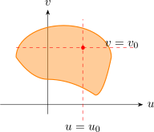
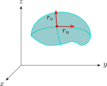
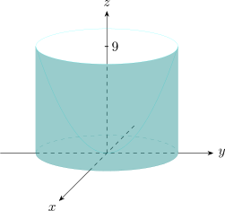

3.14 Surface Area
Recall from the section on surfaces that a parametric surface \(S\) is given by a vector function of two parameters, \[\mathbf r(u,v) = x (u,v) \,\mathbf i + y (u,v)\, \mathbf j + z (u,v)\, \mathbf k ,\qquad (u,v)\in D .\]
|  |  |
Let \(P_0\) be the point of the surface with position vector \(\mathbf r(u_0,v_0)\), where the tangent vectors are \[\mathbf r_u = \frac {\partial x}{\partial u}(u_0,v_0)\,\mathbf i + \frac {\partial y}{\partial u}(u_0,v_0)\,\mathbf j + \frac {\partial z}{\partial u}(u_0,v_0)\,\mathbf k ,\qquad \mathbf r_v = \frac {\partial x}{\partial v}(u_0,v_0)\,\mathbf i + \frac {\partial y}{\partial v}(u_0,v_0)\,\mathbf j + \frac {\partial z}{\partial v}(u_0,v_0)\,\mathbf k .\] As in the change of variables, a small rectangle \(\Delta u\) by \(\Delta v\) in \(D\) is carried to a small patch of \(S\) that is approximately the parallelogram spanned by \(\Delta u\,\mathbf r_u\) and \(\Delta v\,\mathbf r_v\), whose area is \[|\Delta u \, \mathbf r_u \times \Delta v \, \mathbf r_v| = |\mathbf r_u \times \mathbf r_v| \,\Delta u \, \Delta v .\] So the area of \(S\) is approximately \(\sum _{i}\sum _{j}|\mathbf r_u \times \mathbf r_v| \,\Delta u \, \Delta v\), which is a Riemann sum for \(\iint _D |\mathbf r_u \times \mathbf r_v|\,du\,dv\).
Definition 3.14.1. If a smooth parametric surface \(S\) is given by \(\mathbf r(u,v) = x (u,v)\, \mathbf i + y (u,v) \,\mathbf j + z (u,v) \,\mathbf k\) and is covered just once as \((u,v)\) ranges through \(D\), then the surface area of \(S\) is \[A(S) = \iint \limits _D |\mathbf r_u \times \mathbf r_v| \,dA .\]
Solution. Parametrise the sphere by spherical coordinates, \[\mathbf r(\phi , \theta ) = a \sin \phi \cos \theta \,\mathbf i + a \sin \phi \sin \theta \,\mathbf j + a \cos \phi \,\mathbf k ,\qquad 0\leq \phi \leq \pi ,\quad 0\leq \theta \leq 2\pi .\] Then \begin {align*} \mathbf r_{\phi } \times \mathbf r_{\theta } & = \begin {vmatrix} \mathbf i & \mathbf j & \mathbf k\\ a\cos \phi \cos \theta & a \cos \phi \sin \theta & -a \sin \phi \\ -a\sin \phi \sin \theta & a \sin \phi \cos \theta & 0 \end {vmatrix}\\ & = a^2\sin ^2\phi \cos \theta \,\mathbf i + a^2 \sin ^2\phi \sin \theta \,\mathbf j + a^2 \sin \phi \cos \phi \,\mathbf k , \end {align*}
and \[|\mathbf r_{\phi } \times \mathbf r_{\theta }| = a^2\sqrt {\sin ^4\phi \cos ^2\theta + \sin ^4\phi \sin ^2\theta + \sin ^2\phi \cos ^2\phi } = a^2\sqrt {\sin ^2\phi } = a^2 \sin \phi ,\] since \(\sin \phi \geq 0\) for \(0\leq \phi \leq \pi \). So \[A = \int ^{2\pi }_0 \int ^{\pi }_0 a^2\,\sin \phi \, d\phi \, d\theta = 2\pi a^2\cdot 2 = 4\pi a^2 .\]
Surface Area of a Graph
For the graph \(z = f(x,y)\) of a function with continuous partial derivatives, take \(x\) and \(y\) as parameters: \(\mathbf r(x,y) = x\,\mathbf i + y\,\mathbf j + f(x,y)\,\mathbf k\). Then \(\mathbf r_x = \mathbf i + f_x\,\mathbf k\) and \(\mathbf r_y = \mathbf j + f_y\,\mathbf k\), so \[\mathbf r_x \times \mathbf r_y = \begin {vmatrix} \mathbf i & \mathbf j & \mathbf k\\ 1 & 0 & f_x\\ 0 & 1 & f_y \end {vmatrix} = -f_x\,\mathbf i - f_y\,\mathbf j + \mathbf k ,\] and the surface area of the graph over \(D\) is \[ A(S) = \iint \limits _D\sqrt {1 + \left (\frac {\partial f}{\partial x}\right )^2 + \left (\frac {\partial f}{\partial y}\right )^2 }\,dA .\]
Example 3.14.3. Find the area of the part of the paraboloid \(z = x^2 + y^2\) that lies under the plane \(z = 9\).

Solution. The plane meets the paraboloid in the circle \(x^2 + y^2 = 9\), so \(D\) is the disc of radius \(3\). With \(f_x = 2x\) and \(f_y = 2y\), \begin {align*} A(S) & = \iint \limits _D\sqrt {1 + 4x^2 + 4y^2}\,dA = \int ^{2\pi }_0\int ^3_0 \sqrt {1 + 4r^2}\, r\,dr\,d\theta \\ & = 2\pi \cdot \frac {1}{12}\left [(1 + 4r^2)^{3/2}\right ]_0^3 = \frac {\pi }{6}( 37\sqrt {37} - 1 )\approx 117.3 . \end {align*}
Example 3.14.4. Find the area of the part of the plane \(3x + 2y + z = 6\) that lies in the first octant.
Solution. Here \(z = 6 - 3x - 2y\), so \(\sqrt {1 + f_x^2 + f_y^2} = \sqrt {1 + 9 + 4} = \sqrt {14}\), constant. The region \(D\) is the triangle with vertices \((0,0)\), \((2,0)\), \((0,3)\), of area \(3\), so \(A = 3\sqrt {14}\approx 11.2\).
Example 3.14.5. Find the area of the part of the cone \(z = \sqrt {x^2 + y^2}\) that lies between the planes \(z = 1\) and \(z = 3\).
Solution. With \(f = \sqrt {x^2 + y^2}\), \(f_x^2 + f_y^2 = \frac {x^2 + y^2}{x^2 + y^2} = 1\), so the integrand is \(\sqrt 2\) and the area is \(\sqrt 2\) times the area of the annulus \(1\leq r\leq 3\): \[A = \sqrt 2\cdot \pi (9 - 1) = 8\sqrt 2\,\pi \approx 35.5 .\]
Questions on this section
Stuck on something here? Ask below and it stays attached to this topic.